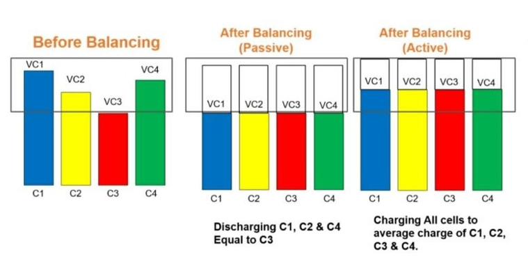

Battery Management Training System
Introduction
What is a Battery Management System?
Battery Management System (BMS) is a system that monitors and manages a rechargeable battery (or group of batteries), such as those found in electric vehicles, UPS systems, and solar energy storage systems.
The BMS is responsible for protecting the battery from operating outside its safe limits, maximizing its lifespan, and providing accurate information about the battery's state of charge, state of health, and current capacity. In short, its primary functions can be narrowed down to ensuring the battery remains safe and reliable.
A BMS typically consists of a control unit, sensors, and connection wires. The control unit may be a separate device or integrated into the battery pack. The sensors monitor various parameters of the battery, such as voltage, current, temperature, and state of charge. The connection wires carry power and data between the battery and the BMS.
The control unit uses the information from the sensors to determine when to charge or discharge the battery, how much power to allow in or out, and whether the battery is operating within its safe limits. If the battery is operating outside its safe limits, the BMS will take action to protect the battery, such as disconnecting it from the load or shutting off power altogether.
The BMS may also provide information about the battery to a user or system, such as the current state of charge, state of health, and remaining capacity. This information can be used to optimize the performance of the system in which the battery is used.
A BMS typically includes safety features to protect the battery, such as overcharge and over discharge protection, short circuit protection, and thermal runaway protection. These safety features help to prevent damage to the battery and ensure that it operates safely.
The BMS may also include features to maximize the lifespan of the battery, such as balancing. Balancing equalizes the voltage of the cells in a battery pack, which helps to prevent capacity loss and extends the lifespan of the battery.
Battery management systems are used in a variety of applications, including electric vehicles, UPS systems, and solar energy storage systems. BMSs are an important part of these systems, as they help to protect the battery from damage, extend its lifespan, and provide accurate information about the battery's state.
What is Cell Balancing?
Battery Cell Balancing also means battery redistribution to improve the overall potential of the battery pack and emphasize each cell’s longevity. Cell Balancing enhances the State of Charge (SOC) of your battery.
An imbalance is created when every cell in the connected series of the battery pack depicts a different SOC. Such an imbalance results in the overall battery capacity equal to the weakest cell in the battery pack.However, to optimize the battery life, we must ensure that we bring a cell balancing to equalize the overall battery of each cell in the pack.
Causes of Imbalance
The causes of imbalance among cells within a battery pack during charging and discharging cycling stems from a combination of factors. Manufacturing variations play a significant role, as no two cells are identical; slight differences in material composition, size, and assembly can affect each cell's performance and capacity. Additionally, the inherent characteristics of lithium cells, which include their chemical makeup and how they age over time, contribute to discrepancies in cell behavior. A critical factor exacerbating imbalance is the variation in internal resistance within each cell, and the resistance between cells, known as busing resistance. These resistances affect how easily electrons flow through the cells and the connecting material, leading to uneven charge and discharge rates among the cells. As some cells may charge or discharge faster than others, this discrepancy can result in a state of imbalance across the battery pack.The Benefits of Balanced Cells
Lithium-ion cells are sensitive to extreme conditions, especially high voltage situations. Without balancing, some cells can become overcharged or discharged more than others. This imbalance can reduce the overall capacity of the battery since the battery management system (BMS) will stop charging if any cell reaches a critical maximum voltage, and stop discharging if any cell reaches critical depleted voltage.Balancing attempts to ensure that all cells reach their full capacity simultaneously, maximizing the usable capacity of the battery. Overcharging or deep discharging even a single cell can significantly harm the cell. Overcharging can cause extreme temperature rise, posing a major risk of thermal runaway – a condition where one cell's failure rapidly cascades to adjacent cells, potentially leading to a fire or explosion. Cell balancing helps to avoid these extremes by ensuring that all cells stay within a safe operating range.
By keeping all cells in balance, the risk of such catastrophic failures is significantly reduced. Consistently operating cells within their optimal voltage range through balancing extends their lifespan. It prevents scenarios where weaker cells degrade faster than stronger ones, which would otherwise lead to premature battery pack failure. There are functionally two ways our industry achieves effective balancing of cells: active and passive.
Types of Cell Balancing
Active Cell Balancing
In an active cell balancer, energy transfers from a higher voltage to a lower voltage cell within the battery. In other words, the cell with higher SoC transfers energy to a lower SoC cell. Thus, the active cell balancing technique avoids dissipating heat energy and rather uses shuttling or converters to balance out the energy levels of the highest voltage cell and the lowest.
The charge shuttling method transfers charges to reach an equal cell voltage. Whereas, energy converts transfer energy via transformers and conductors.
In an active cell balancing, the voltage across each cell is made equal without wasting any energy through a resistor. Suppose consider there are two cells of terminal voltage 4v and 6v. The 4v cell will be charged and the 6v cell will be discharged through the same methods, later the voltage across each cell will become 5v.
Let’s see one more example, Person ‘A’ has 20-liter water in the tank, Person ‘B’ has 10-liter, and Person ‘C’ has 30-liter, now to make equal water in all the three tanks, the person ‘C’ shares water of 10 liters to Person ‘B’, now the water in the tanks becomes equal. This is what active cell balancing does.
The active cell balancing makes the voltage of each cell equal without wasting any energy.
Advantages of Active Cell Balancing
- great performance when you have various cells in your battery having varying capacities.
- Improves efficiency of battery energies by reserving and retaining their excess energy.
- Active cell balancing enhances the cell’s life expectancy.
- It is a speedy cell balancing technique.
Disadvantages of Active Cell Balancing
- There is a loss of energy (10-20%) while transferring energy amongst cells.
- Only one-way flow of energy from higher to lower.
- It has a complex control algorithm and expensive production cost as it needs a power electronics interface.
Passive Cell Balancing
In the Passive Cell Balancing technique, there is a burn-off of excess energy from the higher energy cells till it matches or equals the lower voltage cell. There can be either fixed shunting or switching shunting resistor method for passive cell balancers.
In a passive cell balancing, the voltage across each cell is made equal by wasting the energy through a resistor. Suppose, consider there are two cells having the terminal voltage of cell one 4 volts and the terminal voltage of the second cell 5v. The 1v of the 2nd cell is dropped through the resistor to make the voltages of each cell equal. Or else if the state of charge of cell 01 is 30% and the state of charge of cell 02 is 60%, then 30% of the state of charge in cell 02 is dissipated through a resistor, to make the cell's state of charge equal.
Well, let’s see one more example, Person ‘A’ has 40-liter water in a tank and Person ‘B’ has 50-liter water in a tank, to make water equal in both tanks, the person ‘B’ wastes 10-liter of water to make 40-liter. This is what passive cell balancing does.
Advantages of Passive Cell Balancing
- No need to balance a smooth working battery pack.
- There is no unnecessary wasting of energy when it is balanced.
- It maintains all cells at the same State of Charge.
- One of the low-cost methods for cell balancing.
- Offers self-discharging current and corrects long-term mismatch.
Disadvantages of Passive Cell Balancing
- It has low thermal management.
- There is zero balancings when SoC is full.
- This technique only balances the top 95% of each cell because it burns off excess energy.
- There is a massive amount of energy loss which results in low transmission efficiency.
- No improvement with battery run time.
Cell Balancing Algorithms
Cell balancing can work on two types of algorithms:
Voltage based balancing
In voltage-based cell balancing, voltage is considered as a reference and confirmed if all voltage levels are equal or not. If not, then cell balancing is activated by this method.
History-based balancing
In history-based cell balancing, the state of charge (SoC) is taken as a reference and the difference between cell charges (available) is considered. If the difference is greater than 1, then cell balancing is activated by this method.

Buy full version to unlock all the content & features